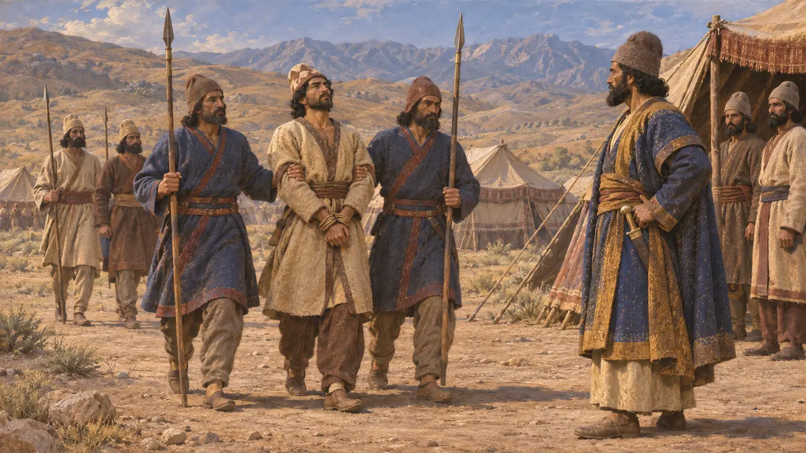
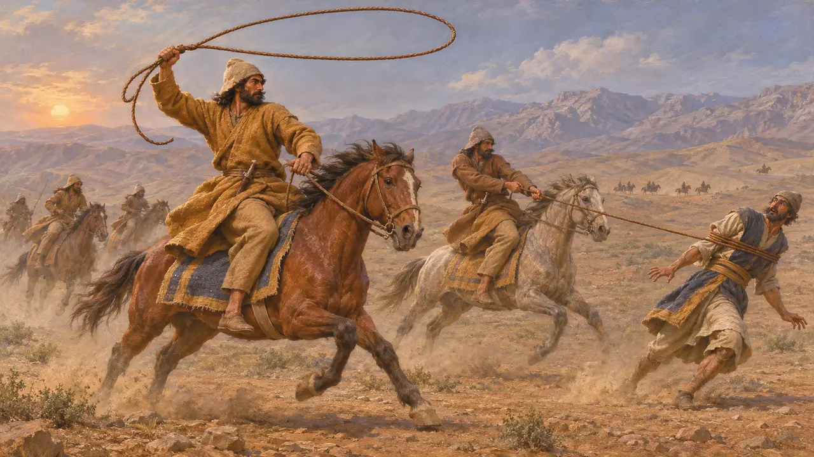
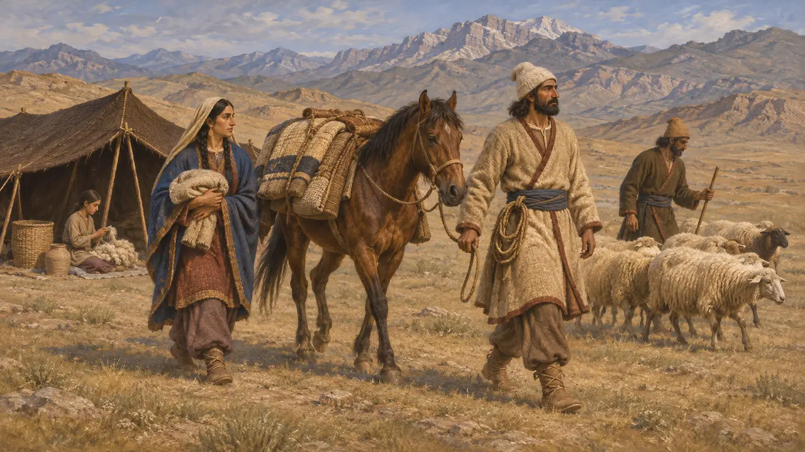
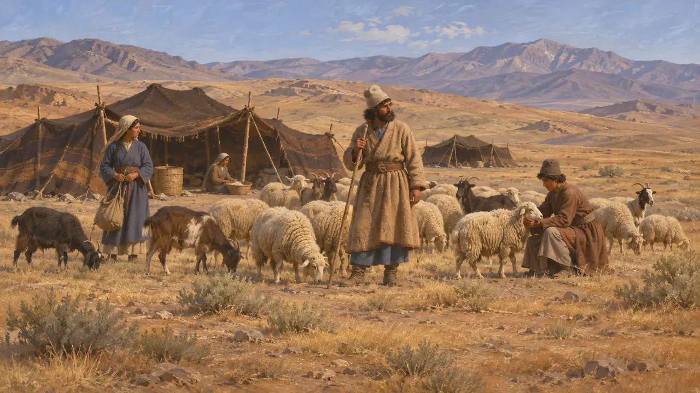

ساغارتيا
أرض الرحّل الساغارتيين في إيران، ثارت بقيادة تشيثرانتخما سنة 521 ق.م
في اللعبة: المستوى 3: الكذب
كانت ساغارتيا أرض الساغارتيين، رحّل إيرانيين على الهضبة شرق ميديا. في سنة 521 ادّعى ساغارتي يُدعى تشيثرانتخما أنه ملك ساغارتيا من سلالة كياكسارس وثار على داريوس. ويعرف هيرودوت الساغارتيين فرسانًا يقاتلون بالوهق.
في اللعبة: تُذكر ساغارتيا في حوليات مرحلة باغاستانا وفي حملات قادة الملك، بين البلاد التي ثارت في 522-521.



قبيلة فارسية
رواية قديمةيعدّ هيرودوت الساغارتيين من قبائل الفرس، مع الدائيين والمارديين وغيرهم من الرحّل، تمييزًا لهم عن القبائل الزراعية. وفي الجزية وُضعوا في القسم الرابع عشر مع الزرنكيين وغيرهم، الذي كان يؤدي ستمئة وزنة.
Herodotus 1.125, 3.93

أين كانت ساغارتيا؟
متنازع عليهموقعها غير مؤكد. يضعها أكثر المؤرخين على الهضبة الوسطى شرق ميديا، ربما نحو يزد الحالية، ويرونها أرض رعي لا ولاية ذات مدن. كما تبقى صلة الساغارتيين بالسلالة الملكية الميدية في دعوى تشيثرانتخما بلا تفسير.
P. Briant, From Cyrus to Alexander, 2002
المصادر
- Behistun inscription §33
- Herodotus 1.125, 3.93, 7.85
- P. Briant, From Cyrus to Alexander, 2002